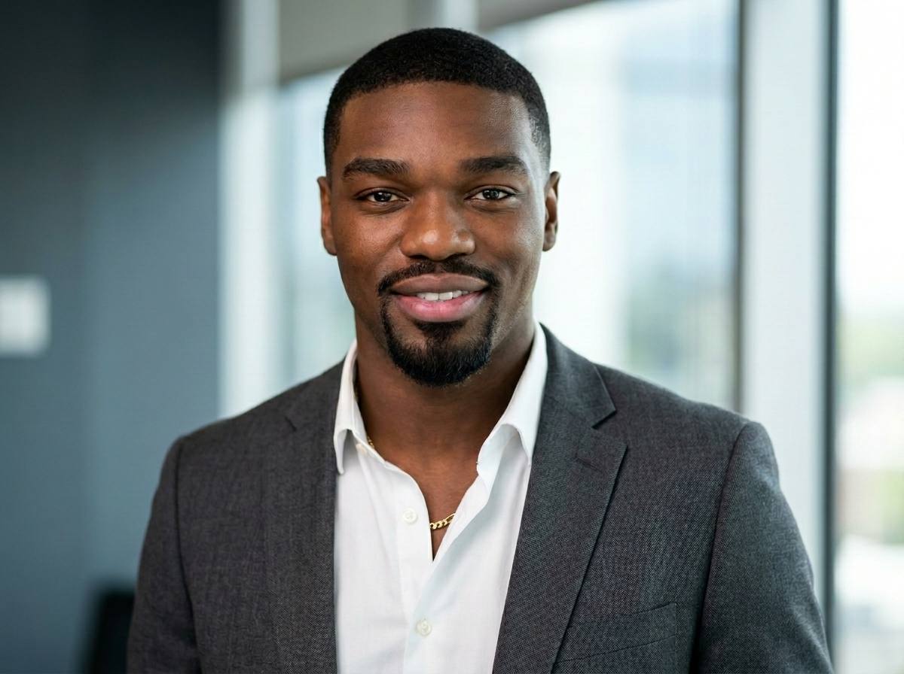

Engenheiro full-stack especializado em sistemas de produção e integração de IA. Fundei a Avenix — 11+ projetos entregues, 30+ deployments em produção geridos. Desenvolvi e lancei a LitCal, uma app iOS com IA, do primeiro commit à App Store em 2 semanas.

Sou engenheiro de software full-stack especializado em sistemas de produção, integração de IA e entrega de produto de ponta a ponta. Fundei a Avenix em março de 2025 — agência de software e automação com 11+ projetos entregues e 30+ deployments em produção geridos em hotelaria, gestão de frotas e setor institucional.
Desenvolvi e lancei a LitCal, uma app iOS de nutrição com IA, do primeiro commit à App Store em 2 semanas — alcançando 200+ utilizadores ativos e $1.000+ em receita no primeiro mês. Tenho domínio completo do stack: design de APIs REST, mobile (React Native), web (Next.js), infraestrutura cloud (Supabase, Vercel) e sistemas de IA (OpenAI, Claude).
Coordeno entrega técnica com estúdios parceiros — incluindo a AspireVerse (Reino Unido) — e stakeholders de clientes para entregar software rápido, fiável e de produção.
Fluente em Inglês e Português. Disponível para contratos de engenharia remotos a nível global.
Cada produto aqui está ativo, é usado por pessoas reais, e foi construído de ponta a ponta — design, engenharia e deployment.
Cada função moldou a forma como construo, entrego e lidero.
Domínio completo do stack, da interface à infraestrutura.
JavaScript · TypeScript · React Native · React · Next.js · Design de APIs REST · SQL · PostgreSQL · Git · Entrega Ágil · CI/CD (EAS Build, GitHub Actions) · Infraestrutura Cloud (Supabase, Vercel) · iOS & Android · Testes & QA
API OpenAI · GPT-4 Vision · API Claude · Design de Agentes IA · Engenharia de Prompts · n8n · Make
Arquitetura Full-Stack · Ownership do SDLC · Design UX/UI · Figma · Roadmapping · Deployment App Store · Monetização por Subscrição · Documentação Técnica · Revisão de Código
Criação de Empresas · Angariação de Clientes · Desenvolvimento de Negócios · Planeamento Estratégico · Negociação Comercial
Estou aberto a posições full-time, projetos freelance e contratos de engenharia remotos a nível global. Se estás a construir algo ambicioso, quero ouvir sobre isso.